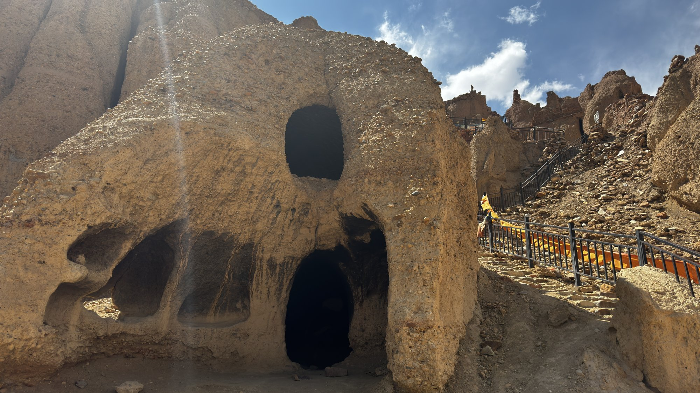
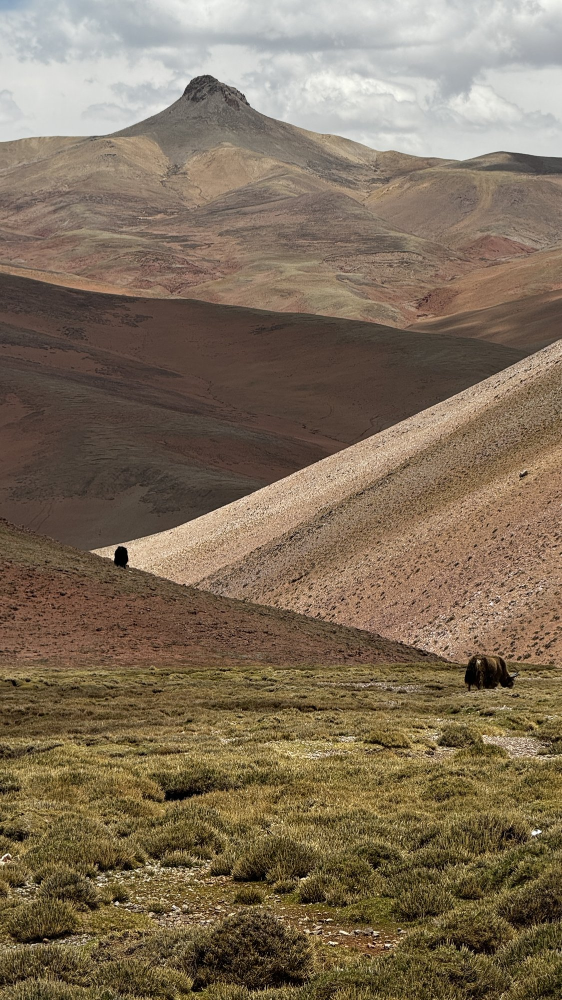
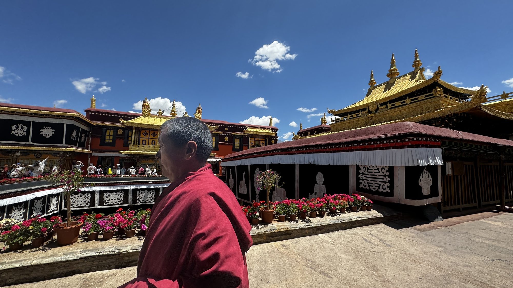
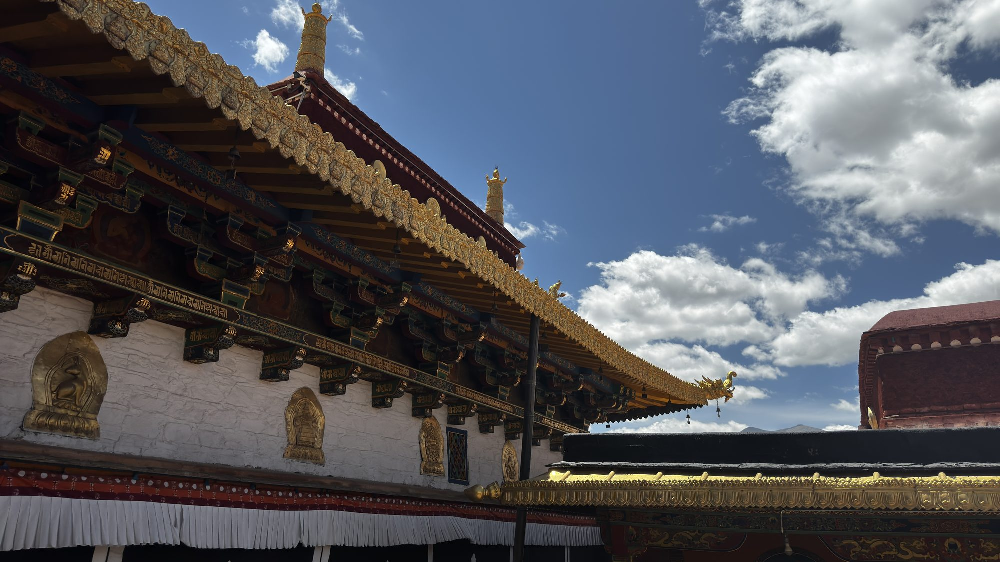

蓝天白云下，雪山与圣湖交相辉映
阿里，位于西藏西部，平均海拔4500米以上，被称为"世界屋脊的屋脊"、"生命禁区中的生命之地"。这里地广人稀，却汇聚了西藏最极致、最纯粹的自然与人文景观。
2024年5月底至6月初，我们开启了这场环绕阿里的自驾之旅：从拉萨出发，途经圣湖雪山、扎达土林、古格王朝遗址，最后穿越羌塘草原看尽野生动物，完成一条壮丽的环线。
这里是神灵栖居之地——冈仁波齐、玛旁雍错、扎达土林、古格王朝……每一处都足以让人屏息。

旅程从世界屋脊的中心——拉萨开始。布达拉宫矗立在玛布日山上，红白相间的宫殿群巍峨庄严，是藏传佛教的圣地和历代达赖喇嘛的冬宫，也是西藏最著名的地标。
站在广场上仰望，蓝天白云下的布达拉宫气势恢宏，仿佛在诉说千年的信仰与荣耀。
进入拉萨 · 布达拉宫 →
阿里是雪山与圣湖的王国。纳木错、玛旁雍错、羊卓雍错……一措再措，每个湖泊都蓝得让人心醉。镜面般的湖面倒映着雪山与云朵，构成绝美的对称画卷。
这里是藏族人心中的圣湖，信徒们环绕圣湖转经祈福，湖水被视为能洗净罪孽的圣水。
进入圣湖 · 雪山 →
扎达土林是亿万年前地质运动造就的自然奇观，连绵的土林如一座座古城堡，在夕阳下泛着金黄的光。而在土林深处，静静矗立着神秘的古格王朝遗址。
古格王朝曾盛极一时，又在三百多年前一夜之间神秘消失，留下无数未解之谜，等待后人探寻。
进入扎达土林 · 古格 →
班公湖横跨中印边界，湖水一半咸一半淡，蔚蓝如宝石。而在广袤的羌塘草原上，藏野驴、藏羚羊、藏狼等野生动物自由奔跑，展现着高原生命的顽强与野性之美。
这里是野生动物的天堂，也是摄影爱好者的终极梦想之地。
进入班公湖 · 野生动物 →



抵达拉萨，朝圣布达拉宫，感受雪域圣城的第一印象。
沿环线北上，邂逅一个个圣湖，镜面湖水倒映雪山蓝天。
深入扎达，穿行土林峡谷，探访神秘的古格王朝遗址。
抵达班公湖，穿越羌塘草原，与野生动物不期而遇。
沿线返回，在日喀则参访藏传佛教寺院。金顶映日、红袍静立，为这场高原之旅画上圆满而宁静的句点。

